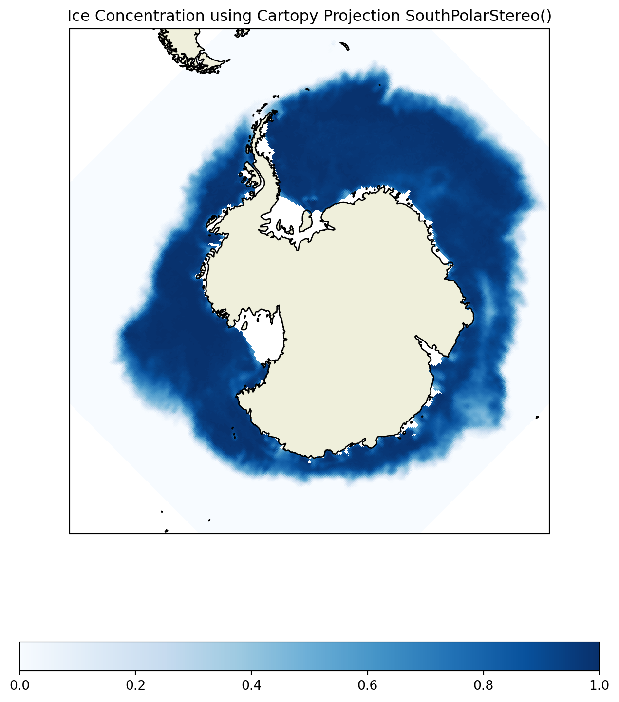
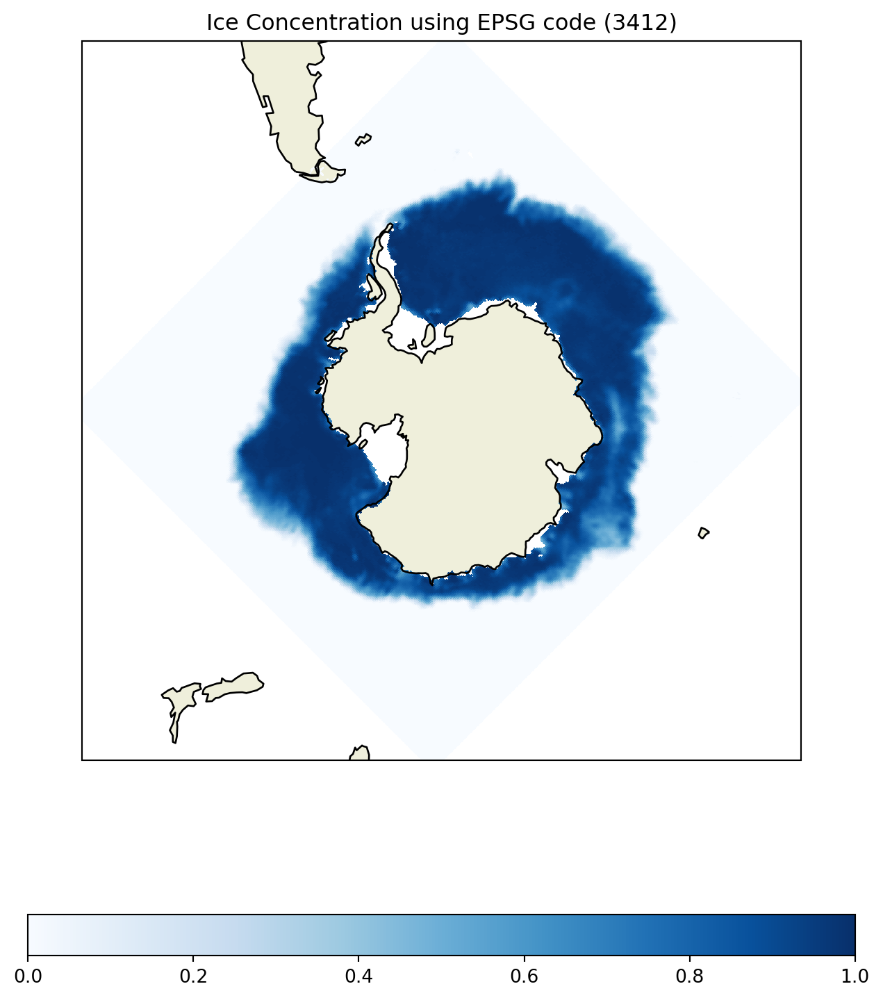
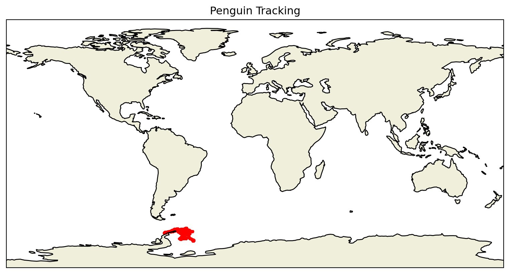
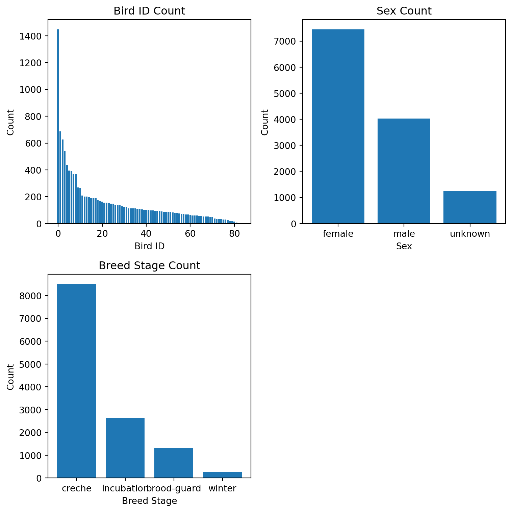
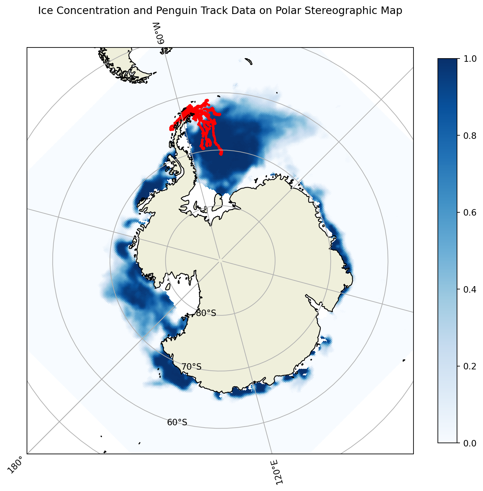
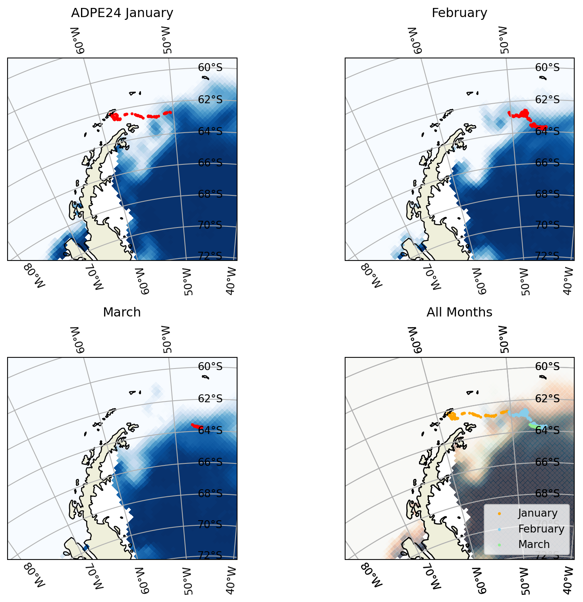

Sea Ice Concentration and Animal Telemetry
Geospatial Data Analysis
Remote Sensing
An Introduction to Integrated Analysis of Polar Projection and Animal Telemetry
This project utilizes Remote Sensing data from NOAA Polar Watch, demonstrating the application of projection techniques and the integration of Animal Telemetry data.
Sea Ice Concentration Data
Among the Remote Sensing data, widely known Sea Ice is also included. Using Antarctica as a reference, this project visualizes the data on a plane and introduces projection techniques.
Sea Ice Concentration data was obtained from the NOAA Polar Watch ERDDAP Data Server and NetCDF format was used in this project. This data mainly includes time, coordinates, and Sea Ice Concentration data.
The data and its details are available at the following link.
- https://polarwatch.noaa.gov/erddap/griddap/nsidcG02202v4shmday.html
South Polar Projections
There are many ways to represent the spherical Earth in a way that is easy to visualize. However, representing the spherical Earth on a flat surface inevitably causes distortions. Using the two projection methods introduced below, the South Polar region can be visualized on a flat map.
I. Polar Stereographic Projection
The Polar Stereographic Projection is a projection method centered on the polar regions. In this case, it is centered on the South Pole.
Details about the Polar Stereographic Projection can be found from the link below.
- https://nsidc.org/data/user-resources/help-center/guide-nsidcs-polar-stereographic-projection
The blue areas in the map above represent Sea Ice Concentration, and the concentration levels can be referenced using the color bar.
II. EPSG Code 3412
Another projection method is to use a location-specific EPSG code. The EPSG code for the South Pole is 3412, and the map below shows the projection using this code.
Other EPSG Codes can be found from the link below.
- https://epsg.io/

Adelie Penguin Telemetry Data
The Adelie Penguin Telemetry dataset tracks the movement paths of Adelie Penguins, allowing their behavior to be visualized on a map. It can also be compared with the Sea Ice Concentration map to examine the correlation between the two datasets.
Adelie Penguin Telemetry Data was obtained from NOAA NCEI and can be accessed through the link below.
- https://www.ncei.noaa.gov/node/6696
| BirdId | Sex | Age | Breed Stage | DateGMT | TimeGMT | Latitude | Longitude | ArgosQuality | |
|---|---|---|---|---|---|---|---|---|---|
| 0 | ADPE1 | female | adult | incubation | 28/10/1997 | 7:54:00 | -62.171667 | -58.445000 | 2 |
| 1 | ADPE1 | female | adult | incubation | 28/10/1997 | 9:32:00 | -62.173333 | -58.463333 | 2 |
| 2 | ADPE1 | female | adult | incubation | 28/10/1997 | 18:15:00 | -62.158333 | -58.426667 | 1 |
| 3 | ADPE1 | female | adult | incubation | 28/10/1997 | 19:57:00 | -62.175000 | -58.441667 | 2 |
| 4 | ADPE1 | female | adult | incubation | 28/10/1997 | 21:37:00 | -62.171667 | -58.445000 | 2 |
The table above shows a sample of the Telemetry Data.
The Distribution of Penguins

The distributions are shown above to better understand the data, allowing for further analysis based on different categories.
Penguin Locations on the Projected Map
The locations of penguins on Earth are shown as follows.


The penguins’ movement paths can be seen on the map, showing the areas where they are most active. Analyzing various factors can help examine the correlations between them.
Penguin Tracking Considering Various Factors

The plot above shows the daily movement paths of penguins by sex, illustrating the differences in movement patterns between sex groups. Category Sex was considered because activities such as breeding and foraging may differ between male and female groups.

The plot above shows the daily movement paths with directions, filtered only to include data with Argos Quality of 3 and 2, which indicate data accuracy.
Note:
- Argos Quality 3 - an error of less than 150 meters (with 4 or more messages)
- Argos Quality 2 - an error between 150 and 350 meters (with 4 or more messages)
Monthly Tracking with Sea Ice Concentration
Bird ID ADPE24 (Female)
The individual with the most data is used as a representative example below, and its paths over time are shown with the corresponding sea ice concentration below. This can show the relationship between Sea Ice Concentration and penguin movement patterns.

As shown above, ADPE24 has data from January to March 2003, and it traveled from the island towards areas with higher sea ice concentrations. The sea ice concentration varies by month, and it is clear that ADPE24 follows these changes. Although this is just one sample, it suggests that there is a relationship between sea ice and penguin movement patterns.
This project demonstrates the visualization of Remote Sensing data using projection techniques, allowing integration with other datasets for comparative analysis. There are multiple projection methods available, which can be used to effectively represent various geospatial data.